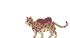
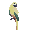
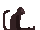
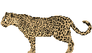

Maracajá

Sobre o jogo
Maracajá é um jogo desenvolvido dentro do IFPR campus Curitiba no curso de Programação de Jogos Digitais, como o Projeto Final do curso, feito pelos alunos e Ruliam dos Santos Oliveira, Gabriela da Rocha de Oliveira, Paloma, Vitor e Lucas Peixoto. O jogador atua no jogo como um gatinho chamado Maracuja, que foi resgatado por cientistas de uma das queimadas da Floresta Amazônica. O objetivo atual de Maracuja é ajudar os cientistas com informações que ele obtem na floresta, enquanto conversa e fotografa os animais. Os animais que Maracuja encontra é um tamanduá-bandeira, uma ararajuba, um macaco-aranha e uma onça-pintada, todos animais em risco de extinção da Floresta Amazônica.
Personagens
| Imagem | Nome | Descrição |
|---|---|---|
|  | Maracujá | É o nosso gatinho Maracujá, ele é quem está ajudando os cientistas. Ele foi resgatado de um incêndio por eles, e desde então se sente em uma dívida com eles, e está pagando ela com suas fotografias. |
|  | Ararajuba | Esse é o nosso passarinho irritado, apesar de seu humor meio ríspido ele é um ótimo passarinho que só está buscando um lugar para colocar seus ovos. |
|  | Macaco-Aranha | O macaco-aranha apelidou carinhosamente Maracajá de felino. Ele está em busca de energias para poder fugir da floresta. Ele adora fazer apostas e trocas! |
|  | Onça | Essa é de aparência a mais feroz dos animais, porém ao conversar com ela você vê que ela pode ser mais sutíl que um passáro. Ela está buscando seu filhote que saiu para brincar. |